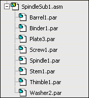
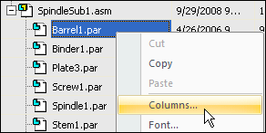
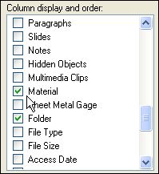
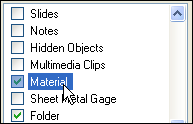
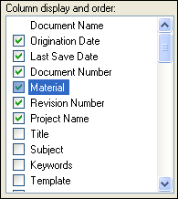
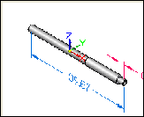
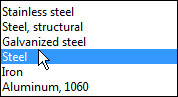
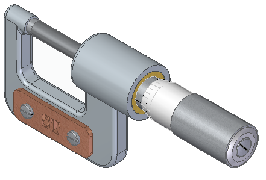

Edit a component properties

In the next few steps, update the material properties for a part in the assembly using Property Manager. Because material properties are tied to color display in Solid Edge, the color of the part will also update.
-
Use Property Manager to modify the existing properties or create new properties for one or more Solid Edge documents.
-
Use Property Manager to edit the properties for the active document, a group of documents defined, or all the documents used in an assembly or assembly drawing.
-
On the File menu, click Info→Property Manager.
Observe the various property categories.
Depending on the current computer settings, Property Manager may display using the No levels or BOM view options.
In Property Manager, select the BOM view option.
In Property Manager, click the + symbol adjacent to the SpindleSub1.asm entry to display the list of parts in this subassembly.
The display should now match the illustration below.

By default, the Material property column does not display. Customize Property Manager to display the property columns to use. The column order can also be customized.
Position the cursor over the Property Manager dialog box, then right-click to display the shortcut menu.
On the shortcut menu, click Columns to display the Format Columns dialog box.

In the Column display and order list, scroll down, and then click the check box adjacent to the Material property entry.

Position the cursor over the text for the Material property and click to select it.

Click the Up button and use the scroll bar to move the Material property up the list until it is near the top of the list, just below the Document Number column entry as shown below.

On the Format Columns dialog box, click OK to save the changes.
In Property Manager, click the Material cell for Spindle1.par. The material for the spindle part is currently set to Aluminum.
Notice that when selecting the Material cell, a preview window of the part automatically displays.

In the Material cell, click the arrow to display the list, and then click Steel.

On the Property Manager dialog box, click OK.
Notice that the material color for the part updated.
Click the Tools tab → Update group → Update Active Level list → click the Update All Open Documents button .
Later in the tutorial, you will place a parts list for the assembly where the material property will be used.

Editing the properties for a part in the assembly is finished.